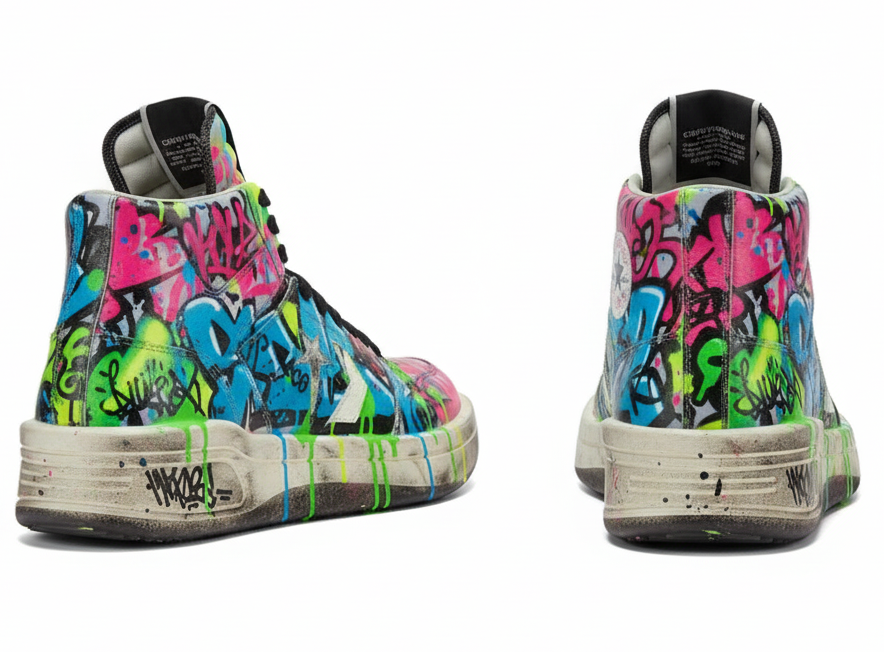
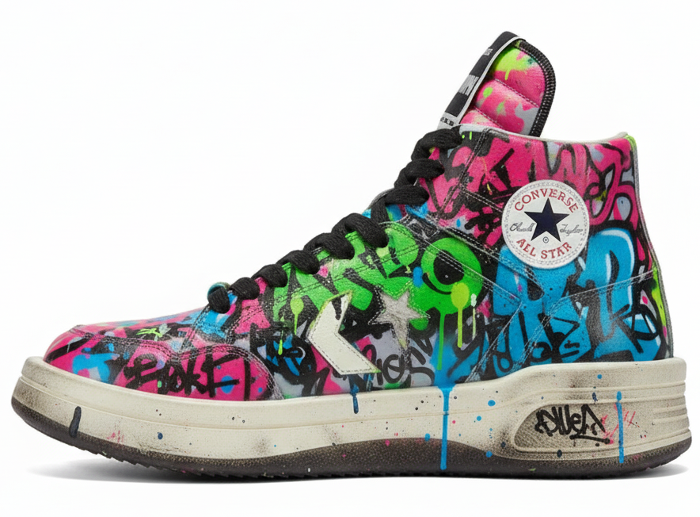
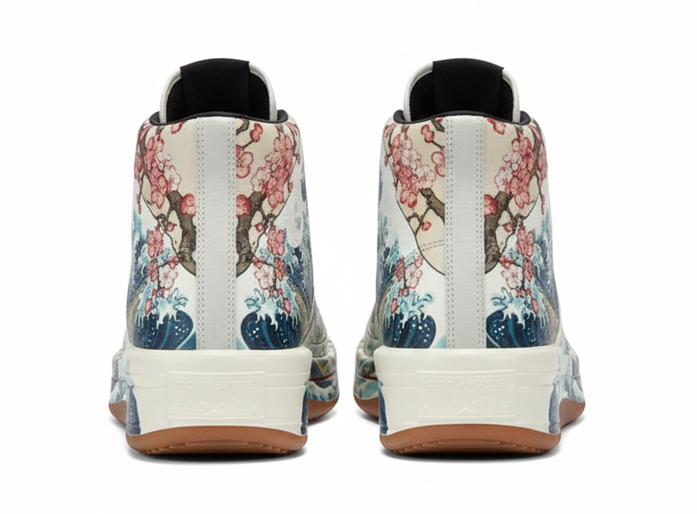
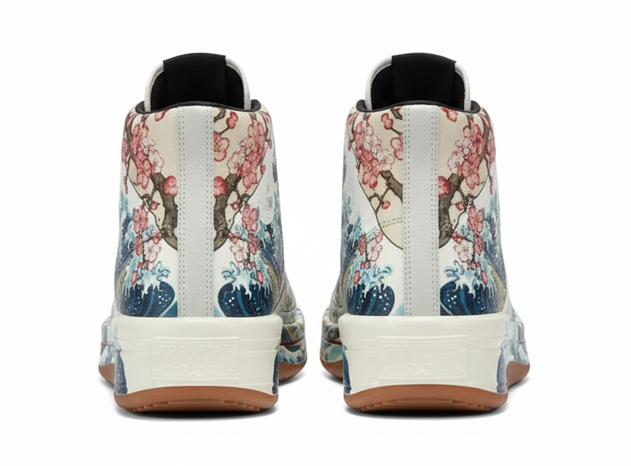
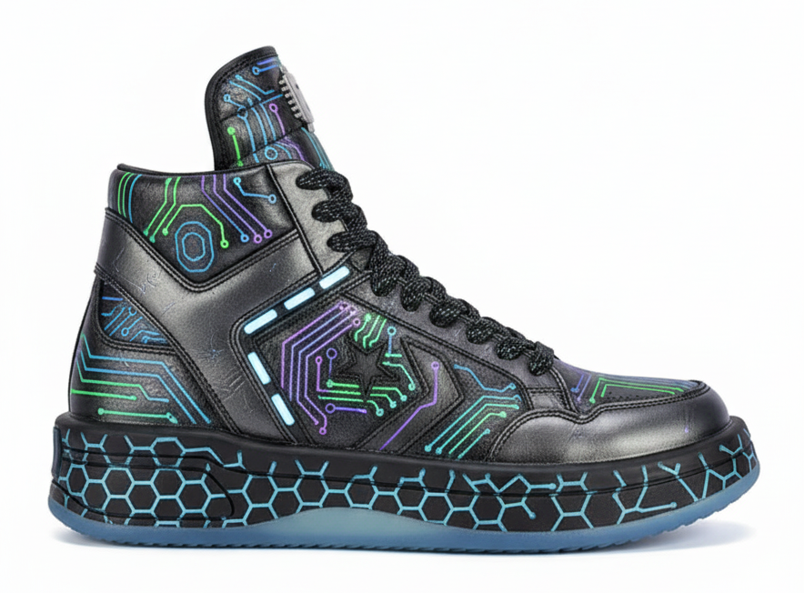
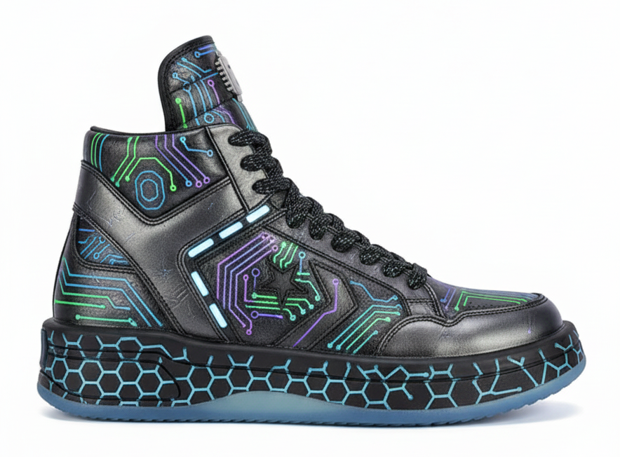
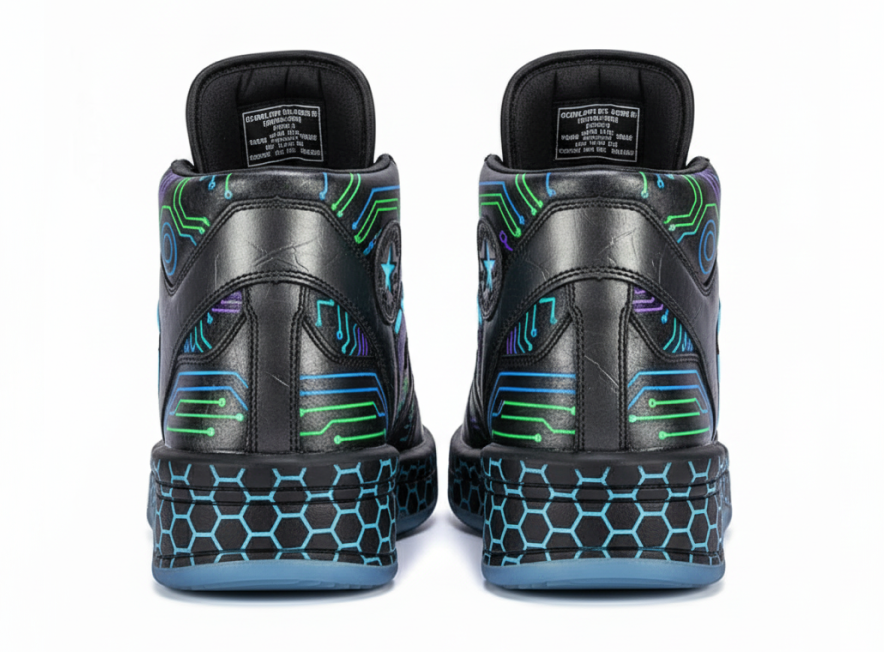
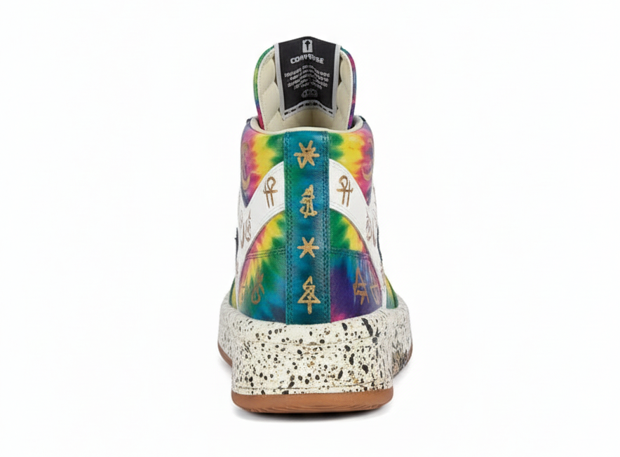
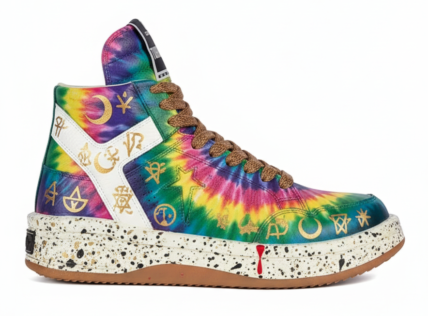

Urban Street Collection
A series of hand-painted custom sneakers inspired by urban landscapes and street art culture. Each pair tells a unique story of the city—from weathered brick walls and graffiti tags to the energy of bustling streets. Using premium leather paints and protective finishes, these pieces blend wearable art with everyday functionality.



 


 




